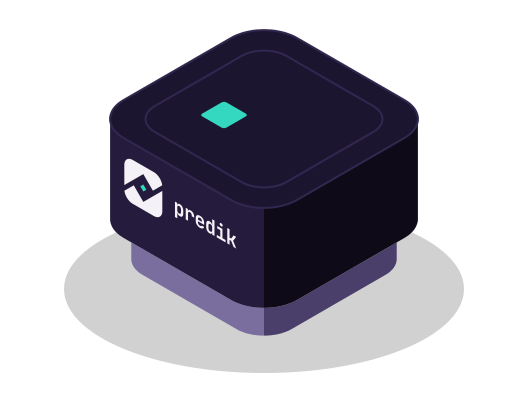

Manutenção preditiva para agroindústria, sensor e software inclusos.
De 12 paradas por ano para 5: +42 horas de linha rodando. Preço público e simulador na tela.
Empresa-base: 12 paradas por ano de 6 h; cada hora de linha rodando vale R$ 15.000. Projeção, não resultado medido.

12Toda parada no susto custa mais do que a peça quebrada.
Descobre a falha com a máquina já parada, sem peça e sem equipe.
Pedido atrasado e produção para recuperar. A conta chega no fim do mês.
Hora de linha perdida no pico não volta.
Esperar mais um ano é aceitar R$ 1,08 mi de parada. Com a Predik, a projeção é R$ 450 mil.
Solicite um diagnóstico da sua plantaDa parada no susto à parada marcada.
12 paradas não planejadas por ano, descobertas só depois que a máquina parou.
7 das 12 viram parada marcada, com peça separada e equipe escalada.
Com 100 paradas por ano, a mesma proporção leva a 42. Teste no simulador.
72 horas por ano com a linha parada.
Mais 42 horas de linha rodando, em vez de produção travada.
12 × 6 h contra 5 × 6 h. A conta está aberta e as premissas são editáveis.
R$ 1,08 milhão por ano saindo da operação em parada.
Produção recuperada: o custo de parada cai de R$ 1,08 mi para R$ 450 mil.
72 h × R$ 15.000 contra 30 h × R$ 15.000. Troque o custo por hora e veja mudar.
Projeção sobre a empresa-base de 300 pessoas, 40 ativos críticos e safra de 8 meses. Redução de 12 para 5 paradas (proporção mantida), não resultado medido.
Mais lucro, menos custo, investimento mais enxuto.
R$ 630 mil a menos em parada por ano.
Ele escuta a máquina. Veja por fora, por peça e por dentro.
Incluso na assinatura. Role a página para ver por dentro.
Do sinal da máquina à parada marcada.
1Sinal
O sensor lê vibração e temperatura da máquina o dia inteiro. Quando algo muda, o sinal aparece.
2Plano
O sinal vira parada marcada: dia, janela, peça separada e equipe escalada.
3Memória
Cada máquina lembra do que já viveu. A próxima decisão começa na história dela.
Quer ver esse caminho na sua planta, com os seus números?
Calcule quantas horas a sua fábrica pode ganhar.
Troque pelos números da sua planta.
Com 40 máquinas e 12 paradas por ano, cada mês de espera custa R$ 90 mil em parada. Leve este cenário para um diagnóstico da sua planta.
Você paga 8 meses por ano. O mercado cobra 12.
Os concorrentes cobram o ano inteiro, com a fábrica rodando ou não. A Predik acompanha a safra.
Assinatura anual fixa, inclusive na entressafra.
Ativo nos 8 meses da safra, em pausa nos outros 4. São 33% menos meses pagos.
Antes de falar com a gente.
Quanto custa?
O preço é público e calculado na tela, no simulador, com os números da sua fábrica. Sensor e software estão inclusos na assinatura. O valor final da assinatura ainda está em definição neste protótipo.
O que acontece na entressafra?
O contrato pausa. Você paga os 8 meses da safra, não os 12 do ano.
Preciso comprar o sensor?
Não. O sensor vem incluso na assinatura, junto com o software que marca a parada.
Os números do site são resultados reais?
São projeções sobre uma empresa-base de 300 pessoas, com 40 ativos críticos, 12 paradas por ano de 6 horas e R$ 15.000 por hora de linha parada. No diagnóstico, a conta é refeita com as premissas da sua planta.
O que acontece depois que eu peço o diagnóstico?
Você recebe a projeção com os seus números, vê onde estão as paradas que mais pesam e decide com a conta na mão, sem proposta fechada de saída.
Cada mês de espera é parada que você já pagou.
Manutenção preditiva para agroindústria, sensor e software inclusos. Conte onde a sua linha mais para e receba a projeção com os seus números.
- A conta refeita com as premissas da sua planta, não da empresa-base.
- As paradas que mais pesam e o que muda com parada marcada.
- O modelo de 8 meses por ano aplicado à sua safra.
Pedido registrado.
Neste protótipo nenhum dado foi enviado. Na versão no ar, a Predik responderia com a projeção feita sobre os números do seu cenário.